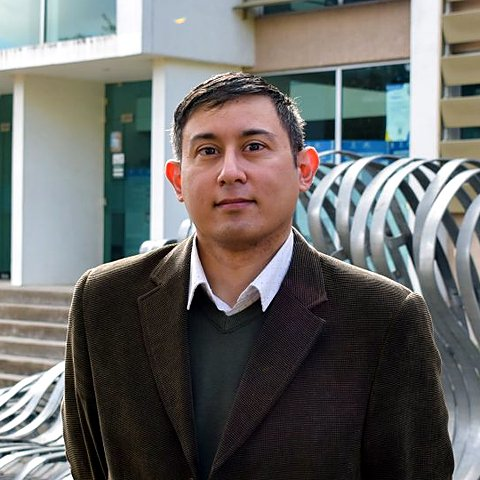

About Me

Rodrigo Linfati is currently a Full Professor (since 2026) in the Department of Industrial Engineering at the University of Bío-Bío in Concepción (Chile), where he joined in 2012. Dr. Linfati earned his Ph.D. in Operational Research from the University of Bologna (Italy). He also earned a Master of Science in Industrial Engineering, a professional degree in Industrial Engineering, and a Bachelor of Science in Engineering from the University of Concepción (Chile).
- Research Areas: operations research, combinatorial optimization, metaheuristics, and operations management.
- Research Interests: heuristic and metaheuristic algorithms (TS, SA, VNS, GA, ACO); mathematical modeling and mixed-integer programming formulations; matheuristics and hybrid optimization techniques; machine learning for optimization, including reinforcement learning; quantum and quantum-inspired optimization (metaheuristics, QUBO, quantum annealing, QAOA).
- Application Areas: vehicle routing and last-mile logistics; supply chain management (forestry, sawmill, mining); cutting stock (sawmill, forestry); scheduling, location, and healthcare.